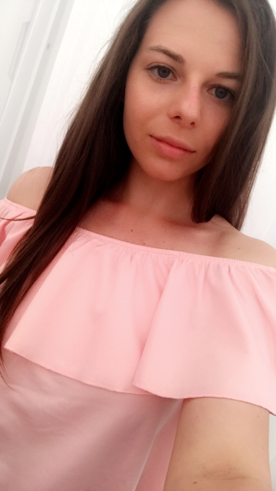

<mat-sidenav-container class="example-container">
  <mat-sidenav mode="side" opened class="sidenav-class row">
    <div style="display: flex;">
      <div class="list">
        <div class="group">
          <span class="material-icons icon">
            arrow_back_ios
          </span>
        </div>
        <div class="group">
          <span class="material-icons icon" [routerLink]="['/profile']" [routerLinkActive]="['selected']">
            person_outline
          </span>
          <span class="material-icons icon" [routerLink]="['/school']" [routerLinkActive]="['selected']">
            school
          </span>
          <span class="material-icons icon" [routerLink]="['/work']" [routerLinkActive]="['selected']">
            work_outline
          </span>
          <span class="material-icons icon" [routerLink]="['/references']" [routerLinkActive]="['selected']">
            public
          </span>
          <span class="material-icons icon" [routerLink]="['/message']" [routerLinkActive]="['selected']">
            chat_bubble_outline
          </span>
        </div>
        <div class="group">
          <span class="material-icons icon">
            translate
          </span>
          <span class="material-icons icon download">
            cloud_download
          </span>
        </div>
      </div>
      <div style="max-height: 927px;">
        
        <div class="info">
          <h1 class="name">Magyar Dorina</h1>
          <h4 class="pos">Web Developer</h4>
          <div class="logos">
            
            
            
            
          </div>
        </div>
      </div>
    </div>
  </mat-sidenav>
  <mat-sidenav-content style="display: flex;">
    <!-- <div style="display: contents; overflow-y: hidden;">
      
      <div class="info">
        <h1 class="name">Magyar Dorina</h1>
        <h4 class="pos">Web Developer</h4>
        <div class="logos">
          
          
          
          
        </div>
      </div>
    </div> -->
    <div class="contents" style="overflow-y: visible;">
      <router-outlet></router-outlet>
    </div>
  </mat-sidenav-content>
</mat-sidenav-container>
